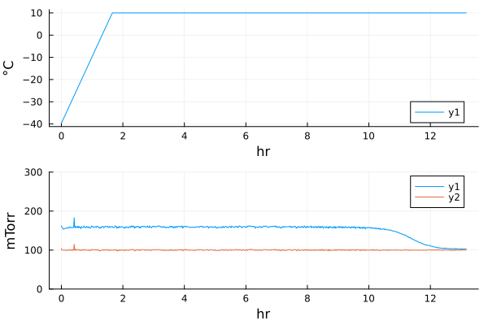
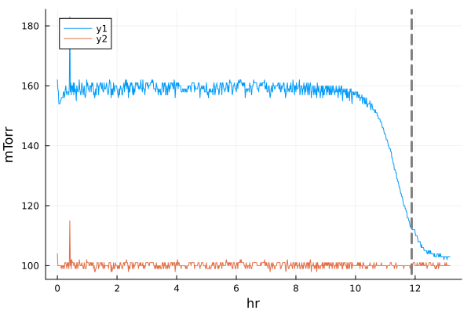
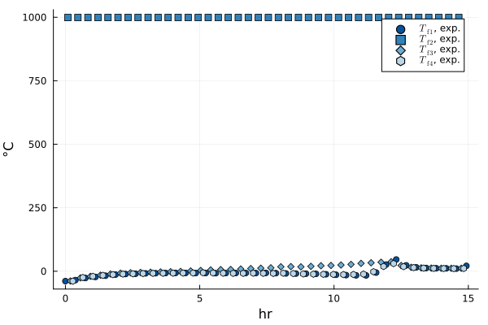
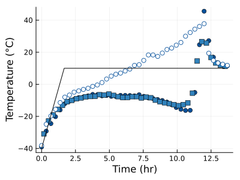
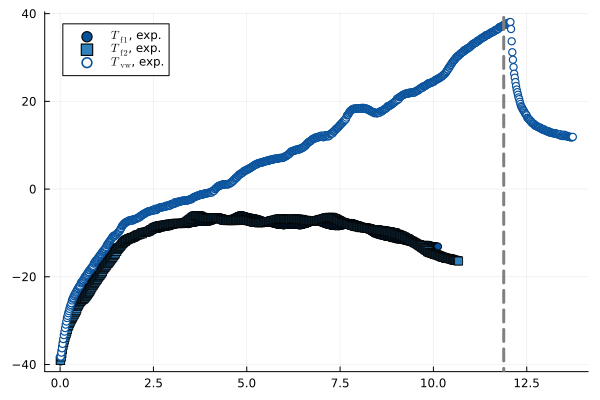
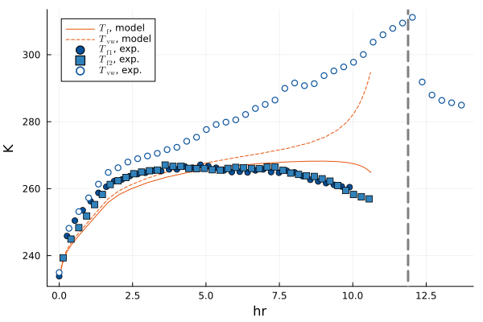
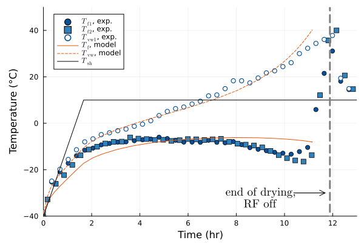

Imports
using LyoProntoNonlinearSolve and TransformVariables are used for parameter fitting
using NonlinearSolveusing TransformVariablesusing ADTypes: AutoForwardDiffCSV and TypedTables load and store experimental data
using TypedTables, CSVusing Dates: DateTimePlots is a frontend to several plotting packages, defaulting to GR
using Plots# All we need from StatsPlots is the @df macrousing StatsPlots: @df# Latexify helps with LaTeX formatting in plotsusing Latexifyusing LaTeXStrings# Set a default for Latexify labelsset_default(labelformat=:square) # Latexify, not PlotsLoad process data
The process data here are from an actual microwave-assisted lyophilization cycle. Since thermocouples cannot be used in a microwave field, the product temperature measurements (from fiber optic probes) are in a separate file, and we must take care to synchronize the time.
dat1 = CSV.read("./2023-03-02_RF_Mannitol_temperature.csv", Table)dat2 = CSV.read("./2023-03-02_RF_Mannitol_process.csv", Table, comment="#", stripwhitespace=true)Table with 12 columns and 1200 rows:
Timestamp SPLYO.CONDENSER_TEM… SPLYO.SHELF_OUTLET.… ⋯
┌───────────────────────────────────────────────────────────────────
1 │ 03/02/2023 14:01:00 -66.0 17.1 ⋯
2 │ 03/02/2023 14:02:00 -67.0 16.5 ⋯
3 │ 03/02/2023 14:03:00 -67.5 16.0 ⋯
4 │ 03/02/2023 14:04:00 -67.7 15.6 ⋯
5 │ 03/02/2023 14:05:00 -67.8 15.2 ⋯
6 │ 03/02/2023 14:06:00 -67.9 14.8 ⋯
7 │ 03/02/2023 14:07:00 -69.2 14.4 ⋯
8 │ 03/02/2023 14:08:00 -71.3 13.9 ⋯
9 │ 03/02/2023 14:09:00 -72.8 13.4 ⋯
10 │ 03/02/2023 14:10:00 -73.7 13.0 ⋯
11 │ 03/02/2023 14:11:00 -74.8 12.4 ⋯
12 │ 03/02/2023 14:12:00 -76.0 12.0 ⋯
13 │ 03/02/2023 14:13:00 -77.1 11.5 ⋯
14 │ 03/02/2023 14:14:00 -77.7 11.0 ⋯
15 │ 03/02/2023 14:15:00 -78.7 10.4 ⋯
16 │ 03/02/2023 14:16:00 -79.5 9.9 ⋯
17 │ 03/02/2023 14:17:00 -80.4 9.5 ⋯
⋮ │ ⋮ ⋮ ⋮ ⋱To follow along, you can use the same data files here and here.
time1 = dat1.var"Elapsed [s]"lyo_full_pre = map(dat2) do row nt = (tstamp = DateTime(row.Timestamp, "mm/dd/yyyy H:M:S"), pch_sp = row.var"SPLYO.VACUUM_SP.F_CV"*u"mTorr", pch_pir = row.var"SPLYO.CHAMBER_PIRANI.F_CV"*u"mTorr", pch_cm = row.var"SPLYO.CHAMBER_CM.F_CV"*u"mTorr", Tsh_sp = row.var"SPLYO.SHELF_SP.F_CV"*u"°C", Tsh_i = row.var"SPLYO.SHELF_INLET.F_CV"*u"°C", Tsh_o = row.var"SPLYO.SHELF_OUTLET.F_CV"*u"°C", ) return ntendtime2 = uconvert.(u"hr", lyo_full_pre.tstamp .- lyo_full_pre.tstamp[1])lyo_full = Table(lyo_full_pre; t=time2)Table with 8 columns and 1200 rows:
tstamp pch_sp pch_pir pch_cm Tsh_sp Tsh_i ⋯
┌──────────────────────────────────────────────────────────────────────────
1 │ 2023-03-02T14:01:00 0 mTorr 1047 mTorr 2100 mTorr 17.4 °C 17.0 °C ⋯
2 │ 2023-03-02T14:02:00 0 mTorr 1047 mTorr 2100 mTorr 16.9 °C 16.5 °C ⋯
3 │ 2023-03-02T14:03:00 0 mTorr 1047 mTorr 2100 mTorr 16.4 °C 16.1 °C ⋯
4 │ 2023-03-02T14:04:00 0 mTorr 1047 mTorr 2100 mTorr 15.9 °C 15.8 °C ⋯
5 │ 2023-03-02T14:05:00 0 mTorr 1047 mTorr 2100 mTorr 15.4 °C 15.3 °C ⋯
6 │ 2023-03-02T14:06:00 0 mTorr 1047 mTorr 2100 mTorr 14.9 °C 14.9 °C ⋯
7 │ 2023-03-02T14:07:00 0 mTorr 1047 mTorr 2100 mTorr 14.4 °C 14.4 °C ⋯
8 │ 2023-03-02T14:08:00 0 mTorr 1047 mTorr 2100 mTorr 13.9 °C 14.0 °C ⋯
9 │ 2023-03-02T14:09:00 0 mTorr 1047 mTorr 2100 mTorr 13.4 °C 13.5 °C ⋯
10 │ 2023-03-02T14:10:00 0 mTorr 1047 mTorr 2100 mTorr 12.9 °C 13.0 °C ⋯
11 │ 2023-03-02T14:11:00 0 mTorr 1047 mTorr 2100 mTorr 12.4 °C 12.5 °C ⋯
12 │ 2023-03-02T14:12:00 0 mTorr 1047 mTorr 2100 mTorr 11.9 °C 11.9 °C ⋯
13 │ 2023-03-02T14:13:00 0 mTorr 1047 mTorr 2100 mTorr 11.4 °C 11.4 °C ⋯
14 │ 2023-03-02T14:14:00 0 mTorr 1047 mTorr 2100 mTorr 10.9 °C 10.8 °C ⋯
15 │ 2023-03-02T14:15:00 0 mTorr 1047 mTorr 2100 mTorr 10.4 °C 10.3 °C ⋯
16 │ 2023-03-02T14:16:00 0 mTorr 1047 mTorr 2100 mTorr 9.9 °C 9.9 °C ⋯
17 │ 2023-03-02T14:17:00 0 mTorr 1047 mTorr 2100 mTorr 9.4 °C 9.4 °C ⋯
⋮ │ ⋮ ⋮ ⋮ ⋮ ⋮ ⋮ ⋱Here we are concerned with the primary drying step, so we need to identify that.
istart_lyo_pd = findfirst(lyo_full.pch_sp .== 100u"mTorr")lyo_pd = Table(lyo_full[istart_lyo_pd:end])# Set start of primary drying as zero timelyo_pd.t .-= lyo_pd.t[1]It's a good idea at this point to plot temperatures and pressures, to make sure everything looks right.
plT = plot(lyo_pd.t, lyo_pd.Tsh_sp)plp = plot(lyo_pd.t, lyo_pd.pch_pir, ylim=(0, 300))plot!(plp, lyo_pd.t, lyo_pd.pch_cm)plot(plT, plp, layout=(2,1), link=:x)
We will use this to set the shelf temperature and pressure that are used later in fitting.
Tsh = RampedVariable(uconvert.(u"K", [-40.0u"°C", 10.0u"°C"]), 0.5u"K/minute")pch = RampedVariable(100u"mTorr")RampedVariable(100 mTorr)We will also need to know when primary drying actually ends, so we will use the second-derivative test in Pirani-CM convergence. This identifies the end of primary drying as the maximum in second derivative, which generally occurs close to the convergence of the two pressure measurements.
t_end = identify_pd_end(lyo_pd.t, lyo_pd.pch_pir, Val(:der2))@df lyo_pd plot(:t, :pch_pir)@df lyo_pd plot!(:t, :pch_cm)tendplot!(t_end)
Next, we need to read the temperature data from the fiber optic probes.
thm_full = map(dat1) do row nt = (tstamp = row.var"Elapsed [s]"*u"s", T1 = row.var"T1 [C]"*u"°C", T2 = row.var"T2 [C]"*u"°C", T3 = row.var"T3 [C]"*u"°C", T4 = row.var"T4 [C]"*u"°C", ) return ntend@df thm_full exptfplot(:tstamp, :T1, :T2, :T3, :T4, nmarks=40, xunit=u"hr")
Clearly we can ignore T2, which is not reading anything physical. Also, note that one of our three remaining thermal probes is on the outside wall of a vial, while the other two are in frozen product. Based on the behavior we see in plots, it is clear that the series denoted T3 is the odd one out.
Next, we need to identify the portion of the temperature data that corresponds to primary drying. After some trial and error, I decided the following achieves that:
istart_thm_pd = argmin(thm_full.T1)iend_thm_pd = argmax(thm_full.T4) + 600thm_pd_sub = Table(thm_full[istart_thm_pd:iend_thm_pd])thm_pd = Table(thm_pd_sub; t = uconvert.(u"hr", thm_pd_sub.tstamp .- thm_pd_sub.tstamp[1]))# Plot our temperatures to make sure everything looks rightplot(u"hr", u"°C", xlabel="Time", ylabel="Temperature", size=(400,300), legend=false)@df thm_pd exptfplot!(:t, :T1, :T4, nmarks=40)@df thm_pd exptvwplot!(:t, :T3, nmarks=40)plot!(Tsh, c=:black, label="shelf", tmax=13.5u"hr")
Based on that plot, we identify the part that we want to fit: everything up until the temperature minimum near 10 hours.
iend_T4 = argmin(thm_pd.T4[1000:end]) + 1000iend_T1 = argmin(thm_pd.T1[1000:end]) + 1000# Factor of 6 is because the temperature data are every 10 seconds,# compared to every minute for process data# T4 and T1 are frozen-product temperatures (TfData); T3 is the vial-wall# temperature series (TvwSeriesData); t_end marks the end of primary drying.fitdat = @df thm_pd[begin:6:end] ExpFitData(:t, TfData(:T4[begin:iend_T4÷6]), TfData(:T1[begin:iend_T1÷6]), TvwSeriesData(:T3), EndTimeData(t_end));plot(fitdat)
Set up other model parameters
# Vial parametersvialsize = "6R"rad_i, rad_o = get_vial_radii(vialsize)A_p = π*rad_i^2 # cross-sectional area inside the vialA_v = π*rad_o^2 # vial bottom aream_v = get_vial_mass(vialsize)# Formulation and fillc_solid = 0.05u"g/mL" # g solute / mL solutionρ_solution = 1u"g/mL" # g/mL total solution densityR0 = 1.4u"cm^2*hr*Torr/g"A1 = 16.0u"cm*hr*Torr/g"A2 = 0.0u"1/cm"Rp = RpFormFit(R0, A1, A2)Vfill = 5u"mL"# Heat transferKC = 2.75e-4u"cal/s/K/cm^2"KP = 8.93e-4u"cal/s/K/cm^2/Torr"KD = 0.46u"1/Torr"K_shf_f = RpFormFit(KC, KP, KD)# Geometryh_f0 = Vfill/A_pm_f0 = Vfill * ρ_solution# RF fit parameters (dummy values, will be replaced in fitting)Bf = 2.0e7u"Ω/m^2"Bvw = 0.9e7u"Ω/m^2"Kvwf = 10.0u"W/K/m^2"# Controllable inputsf_RF = 8u"GHz"# Total of 10W nominal power, multiplied by 0.54 to account for system lossesP_per_vial = RampedVariable(10u"W"/17 * 0.54) # actual power / vialRampedVariable(0.31764705882352945 W)We combine these into a ParamObjRF which will bundle up all the parameters we need. This object needs to be constructed with all these parameters in this order, so it has a constructor taking this tuple-of-tuples form that helps logical grouping.
params_base = ParamObjRF(( (Rp, h_f0, c_solid, ρ_solution), (K_shf_f, A_v, A_p), (pch, Tsh, P_per_vial), (m_f0, LyoPronto.cp_ice, m_v, LyoPronto.cp_gl), (f_RF, LyoPronto.eppf, LyoPronto.epp_gl), (Kvwf, Bf, Bvw),))ParamObjRF{}(RpFormFit{}(1.4 hr cm^2 Torr g^-1, 16.0 hr cm Torr g^-1, 0.0 cm^-1), 0.015915494309189534 mL mm^-2, 0.05 g mL^-1, 1 g mL^-1, RpFormFit{}(0.000275 cal K^-1 cm^-2 s^-1, 0.000893 cal K^-1 cm^-2 s^-1 Torr^-1, 0.46 Torr^-1), 380.132711084365 mm^2, 314.1592653589793 mm^2, RampedVariable(100 mTorr), RampedVariable(Unitful.Quantity{Float64, 𝚯, Unitful.FreeUnits{(K,), 𝚯, nothing}}[233.14999999999998 K, 283.15 K], 0.5 K minute^-1), RampedVariable(0.31764705882352945 W), 5 g, 2090.0 J kg^-1 K^-1, 7.9 g, 839.0 J kg^-1 K^-1, 8 GHz, LyoPronto.Dielectric.ϵppf, 0.024, 10.0 W K^-1 m^-2, 2.0e7 Ω m^-2, 9.0e6 Ω m^-2)Estimates of some physical properties we will often need are included in LyoPronto, including the heat capacity of ice and glass. A literature correlation for the dielectric loss of ice is provided as eppf, and for glass we provide a more-uncertain single value of epp_gl.
Parameter fitting
First, we set up the fit problem, and double check that our guess values are close-ish.
# Transform variables to map from a 3-component vector to bounded physical valuestrans_KBB = KBB_transform_bounded(Kvwf, Bf, Bvw)# Create nonlinear least-squares function# nls_M1 = NonlinearFunction{true, SciMLBase.FullSpecialize}(nls_pd!, resid_prototype=zeros(num_errs(fitdat)))# LyoPronto provides a shorthand for this:nls_M1 = NonlinearFunction(fitdat)# Guess values for fit parameters, in log space# In practice, these often need tinkering withp0 = [3.0, 3.0, 0.3]# Check the physical solution for these guess valuestsol = gen_sol_pd(p0, trans_KBB, params_base)modrftplot(tsol)plot!(fitdat, nmarks=40)
Now, we actually run the fit, which is a nonlinear least squares problem
opt1 = solve(NonlinearLeastSquaresProblem(nls_M1, p0, (trans_KBB, params_base, fitdat)), LevenbergMarquardt())# Get the fitted solutionprof_RF = gen_sol_pd(opt1.u, trans_KBB, params_base)# Get the fitted parameters in parameter spacetransform(trans_KBB, opt1.u)(Kvwf = 22.365949825116658 W K^-1 m^-2, Bf = 4.9124365566150564e8 Ω m^-2, Bvw = 1.0988232829188477e7 Ω m^-2)Now, we can plot the fit results against the experimental data.
# Set up the plotplT = plot(u"hr", u"°C", xlabel="Time", ylabel="Temperature")# Experimental data@df thm_pd exptfplot!(:t, :T4, :T1, nmarks=40)@df thm_pd exptvwplot!(:t, :T3, nmarks=40, label=L"$T_\mathrm{vw1}$, exp.")# Model resultsmodrftplot!(prof_RF, markeralpha=0, trimend=1)# Shelf temperatureplot!(Tsh, c=:black, label=L"T_\mathrm{sh}")# End of primary dryingtendplot!(t_end, label="", ls=:dash)# Mark the end of drying with a nice labelannotate!(9, -32, Plots.text("end of drying,\nRF off", 12, "Computer Modern"))plot!([t_end-1.5u"hr", t_end-0.2u"hr"], [-30, -30], arrow=:arrow, c=:black, linewidth=1, label="")# Set other plot attributesplot!(legend=:topleft, ylim=(-40, 50), xlim=(0,13))plot!(size=(600,400), left_margin=15Plots.px)
This page was generated using Literate.jl.